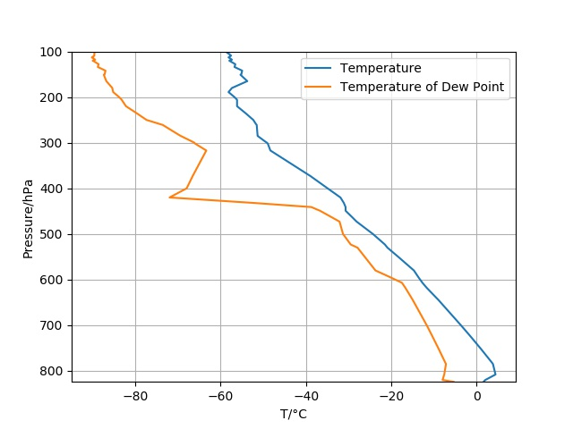

plot¶
The module plot contains the class Plot
-
class
plot.Plot(data)¶ Class Plot plots the data from the radiosonde which gets passed py a Data object. The plot can be customized and be finally displayd with Plot.plot()
-
plot()¶ Plots the plot.
-
set_size(height, length)¶ Sets height and width of the plot.
-
-
plot.plotmap(loc, name)¶ Plot the location and the name of the weatherstation that launches the radiosonde. Gets called in the main program and appears in the documentation.
Example plot produced by the program:

Radio Sonde Plot¶